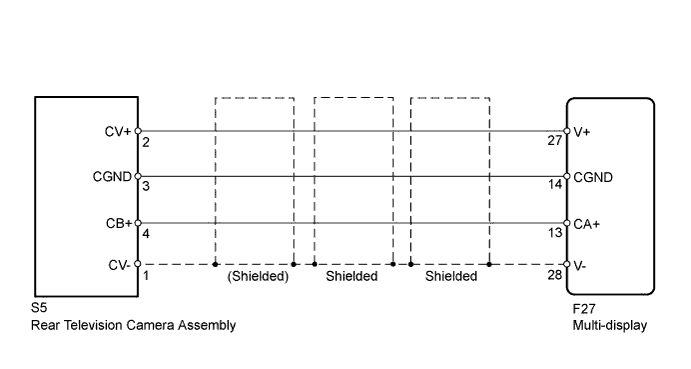
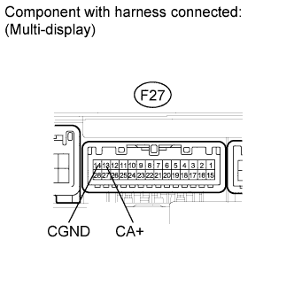
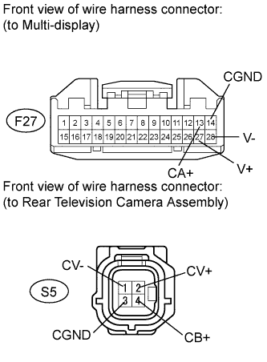

REAR VIEW MONITOR SYSTEM > Display Signal Circuit between Multi-display and Television Camera Assembly |

| 1.CHECK REAR TELEVISION CAMERA ASSEMBLY |

Using an oscilloscope, check the waveform.
| Item | Content |
| Tester No. (Symbol) | S5-2 (CV+) - S5-1 (CV-) |
| Tool Setting | 0.2 V/DIV., 0.2 μS/DIV |
| Condition | Engine switch on (IG), shift lever moved to R |
|
| ||||
| OK | |
| 2.CHECK MULTI-DISPLAY |
 |
Measure the voltage according to the value(s) in the table below.
| Tester Connection | Switch Condition | Specified Condition |
| F27-13 (CA+) - F27-14 (CGND) | Engine switch on (IG), shift lever moved to R | 5.8 to 6.5 V |
|
| ||||
| OK | |
| 3.CHECK HARNESS AND CONNECTOR (MULTI-DISPLAY - REAR TELEVISION CAMERA) |
 |
Disconnect the F27 multi-display connector.
Disconnect the S5 camera connector.
Measure the resistance according to the value(s) in the table below.
| Tester Connection | Condition | Specified Condition |
| S5-4 (CB+) - F27-13 (CA+) | Always | Below 1 Ω |
| S5-3 (CGND) - F27-14 (CGND) | Always | Below 1 Ω |
| S5-2 (CV+) - F27-27 (V+) | Always | Below 1 Ω |
| S5-1 (CV-) - F27-28 (V-) | Always | Below 1 Ω |
| S5-4 (CB+) - Body ground | Always | 10kΩ or higher |
| S5-3 (CGND) - Body ground | Always | 10kΩ or higher |
| S5-2 (CV+) - Body ground | Always | 10kΩ or higher |
| S5-1 (CV-) - Body ground | Always | 10kΩ or higher |
|
| ||||
| OK | ||
| ||